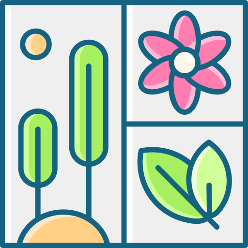
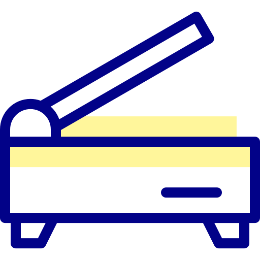

No tool matches that search. Try “photo”, “card” or “pdf”.
Photo prints
Passport and portrait photos sized for printing.
Passport Photo SheetPopularCrop, change dress, set size and fill an A4 or 4×6 sheet.
A4 Full PhotoOne photo on a full A4 page with border and frame options.
4×6 Photo PrintPrint on 4×6 inch photo paper.

4×6 Photos on A4Fit several 4×6 photos on one A4 sheet.
Notary PhotoPhoto layouts for affidavits and notary papers.
Joint PhotoPut two people side by side in one photo.
Remove BackgroundAICut out the person; download PNG, JPG or PDF.
Photo Crop & ResizeSet exact pixels and KB size for online forms.
ID cards & documents
Crop front and back, then print at actual card size.
.png)
ID Card PrintAuto cropAuto-crop card scans and place front and back on A4.
PVC Card CropCrop cards for PVC card printers.
Document AlbumArrange several documents into print pages.
Aadhaar Card PrintOpen the e-Aadhaar PDF and print the card on A4.
PAN Card PrintPrint e-PAN at real card size.
Voter ID PrintPrint the e-EPIC voter card.
Ayushman Card PrintPrint the Ayushman Bharat card.

Document CropStraighten and crop phone scans for printing.
Resume MakerFill in details and download a PDF resume.
PDF & image converters
Convert and combine files without uploading them.
.png)
How a print job works
- Add the photo or document
Drop a photo, scan or PDF onto any tool. It opens right on this computer.
- Adjust the layout
Crop, pick a size, set copies and margins. The preview shows the real paper.
- Print or download
Print at Actual size / 100%, or save a PDF or JPG for later.
Designed & developed by
Built for print shops and cyber cafés: fast layouts, true-size prints, and no uploads.